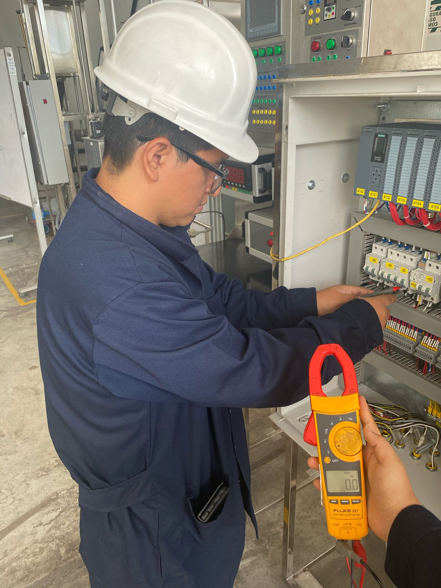
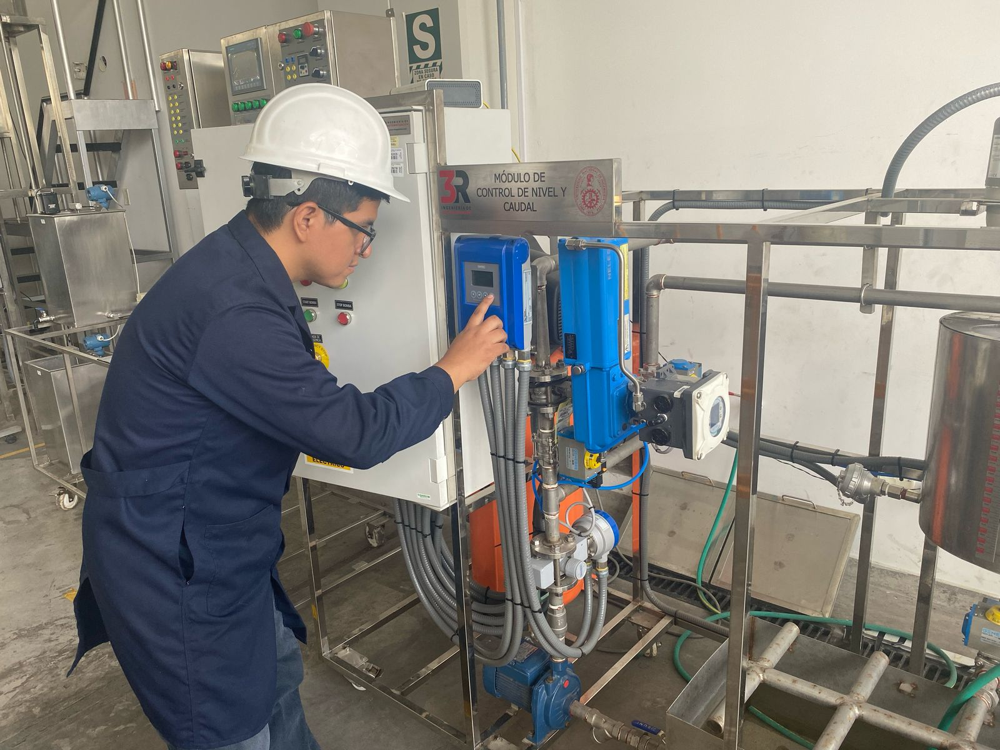
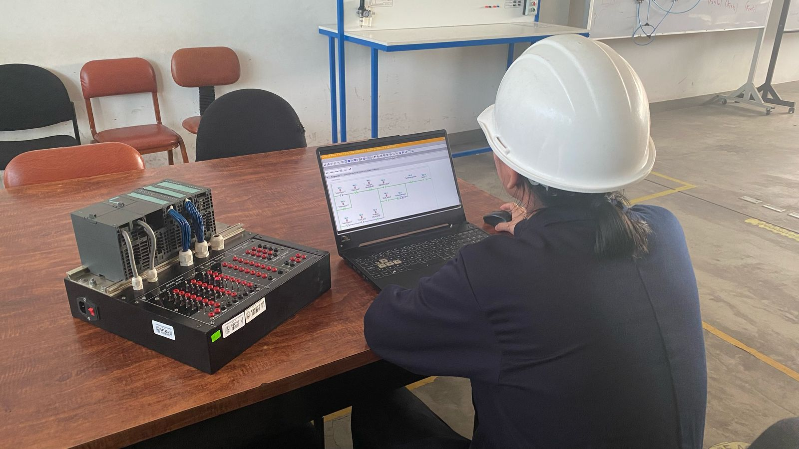
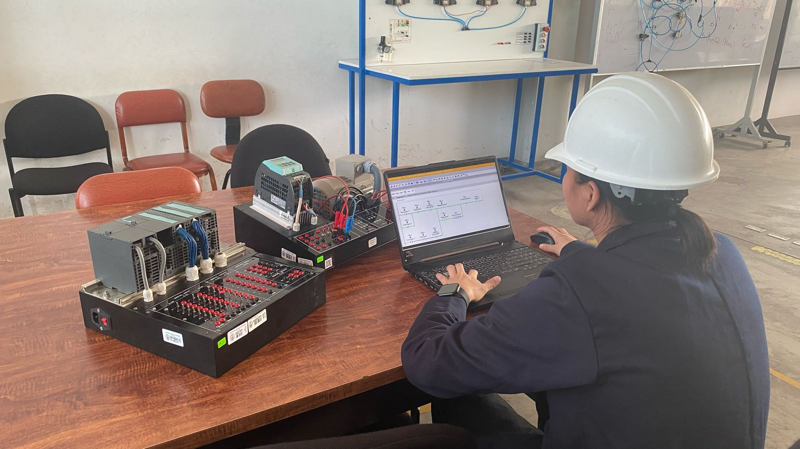

La protección de los tableros eléctricos es crucial para prevenir accidentes, incendios y fallas en el sistema. Implementar medidas preventivas, como la correcta instalación de dispositivos de seguridad y el mantenimiento regular, asegura un funcionamiento eficiente y confiable. Esto no solo minimiza riesgos, sino que también optimiza el rendimiento, reduce costos de reparación y extiende la vida útil de los equipos.

La calibración de instrumentos es fundamental para asegurar mediciones precisas y confiables. Realizar calibraciones periódicas garantiza la exactitud de los datos, previene errores y mejora la calidad de los resultados. Las medidas preventivas, como el mantenimiento adecuado, extienden la vida útil de los equipos, reducen costos de reparación y optimizan la eficiencia de las mediciones.

La programación de PLC de alta calidad asegura un control preciso y eficiente de procesos industriales. Al ofrecer soluciones personalizadas y optimizadas, se garantiza el máximo rendimiento y la confiabilidad del sistema. Un servicio bien ejecutado mejora la productividad, reduce tiempos de inactividad y asegura la integración perfecta con otros sistemas, brindando resultados duraderos y satisfactorios.

El servicio de programación de variadores de frecuencia garantiza un control preciso de la velocidad y el rendimiento de los motores eléctricos. Al ofrecer soluciones personalizadas, se optimiza la eficiencia energética y se prolonga la vida útil de los equipos. Un servicio de calidad asegura un funcionamiento estable, reduce costos operativos y mejora la productividad en diversos procesos industriales.
Nuestros canales